First name: __________ Last name: __________ Grade: __________
Make the package visit House 1, House 2 and House 3. Count one delivery at each house.
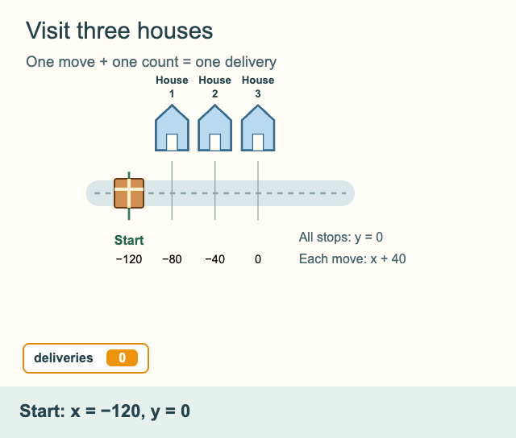
Read the example below. The package stops and the counter changes: 0 → 1 → 2 → 3.
The green flag returns the package to Start, x −120, y 0. It waits one second. The package moves 40 steps to House 1 and counts one delivery. After a pause, it does the same at House 2 and House 3. You will build one block named deliver and repeat it three times.
Keep the file G7_Three_Houses_Starter.sb3 in Downloads.
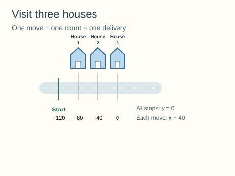
Open Scratch in another tab. Keep this guide open.
Choose File → Load from your computer. Select G7_Three_Houses_Starter.sb3 from Downloads.
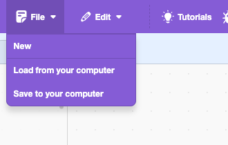
Click the Parcel sprite below the Scratch stage. Open its Code tab.
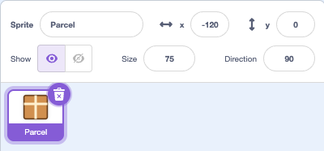
You should see the starting blocks in the code area.
x is left or right. y is up or down.
Find the x and y boxes below the stage. Our Start is x = −120, y = 0. Every house is on the same level, y = 0.
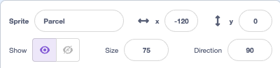
Click the green flag.
Check: the package is at Start, x is −120, y is 0, and deliveries is 0.
These starter blocks reset the program. The one-second wait gives you time to see Start.
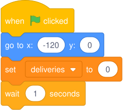
A custom block groups instructions under one name. We will name ours deliver.
On the left of Scratch, click the pink My Blocks category. Click Make a Block.
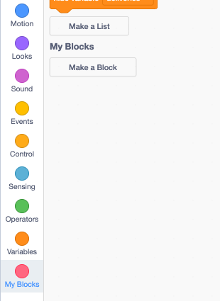
Type deliver in the name box. Leave Run without screen refresh unchecked. Click OK.
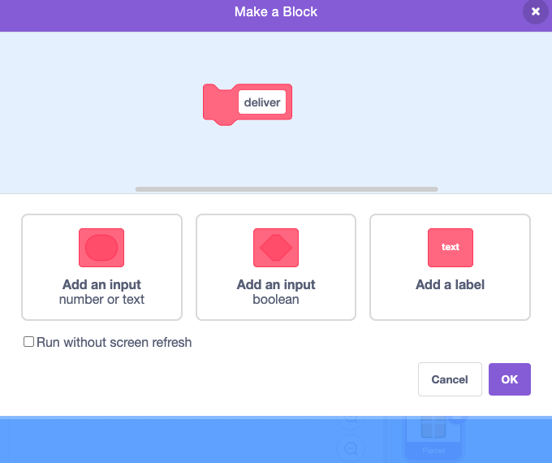
Leave the new define deliver block separate from the green-flag script. It will hold the delivery instructions.
Click the blue Motion category.
Drag change x by 10 under define deliver. Change 10 to 40.
Forty steps takes the package from Start to House 1.
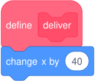
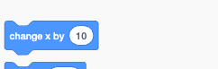
The deliveries variable stores the number of deliveries.
Click orange Variables. Drag change deliveries by 1 below the movement block.
If its dropdown shows another name, choose deliveries.
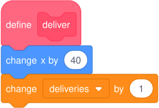
Click orange Control. Drag wait 1 seconds below the counter block.
The pause makes each delivery visible.
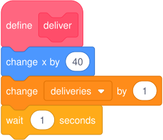
Check that all three instructions are connected below define deliver.
Click My Blocks again. Find the small deliver block.
Drag it below wait 1 seconds in the green-flag script.
Keep define deliver separate. The small block tells Scratch to run its instructions.
Click the green flag.
Watch the package return to Start, pause, then move to House 1. The counter should show 1.
Read the x box: −80. The y box stays 0.
No movement? Put the small deliver block after the reset wait. Wrong count? Keep change deliveries by 1 inside define deliver. Starts in the wrong place? Check go to x −120 y 0 above the small deliver block.
What happens when the small deliver block runs once?
________________________________________________________________
The package moves to the next house, counts one delivery and pauses. / The program creates another house. / The program finishes all three deliveries at once.
A loop repeats instructions.
The empty space inside repeat is where the repeated action goes.
Drag the small deliver block into the empty space inside repeat 3.
Check the picture. Keep the separate define deliver script unchanged.
Now the loop runs the same delivery instructions three times.
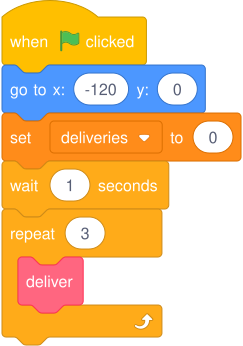
A prediction is what you expect before running. An actual result is what Scratch shows after running.
| x position | Deliveries | |
|---|---|---|
| Prediction, before running | −80 | 1 |
| Actual, read in Scratch | −80 | 1 |
Next, use this same method to test three deliveries.
Keep repeat 3 and movement 40.
Fill the two Before running boxes. Click the green flag in Scratch. Then read the x box and counter and fill the two After running boxes.
Look for three visible stops, ending at House 3. Keep your first predictions, even if they differ.
Before running: predicted final x
________________________________________________________________
Before running: predicted deliveries
________________________________________________________________
After running: actual final x
________________________________________________________________
After running: actual deliveries
________________________________________________________________
Point to define deliver, then to repeat 3 in your Scratch project.
What does deliver do, and what does repeat 3 do?
________________________________________________________________
In Scratch, choose File → Save to your computer.
Replace Firstname and Lastname with your name:
G7_ThreeDeliveries_Firstname_Lastname.sb3
Use Download your answers at the top to save your test PDF.
Open the Scratch delivery practice assignment in Google Classroom.
You are finished when the package visits all three houses, the counter reaches 3, and you can explain deliver and repeat.